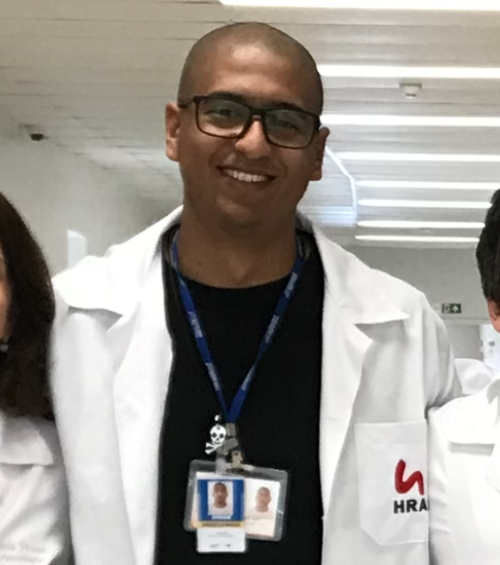
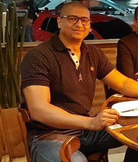

Teleconsultas
- Diagnóstico e acompanhamento de doenças crônicas:
- Hipertensão arterial sistêmica
- Diabetes Mellitus
- Obesidade e hipercolesterolemia
- Psiquiatria
- Pré-natal
- Puericultura
Contato e agendamento



Consulta domiciliar

- Diagnósticos dermatológicos
- Avaliação cardiológica e desportiva
- Interpretação e parecer de exames:
- Hemogramas e lipidogramas;
- Eletrocardiogramas;
- Exames de imagem
- Entre outros...
- Procedimentos:
- Bloqueio neural occiptal para cefaleia e enxaqueca;
- Morfina subctânea e/ou hipodermólise;
- Infusão assistida de cetamina
- Entre outros...